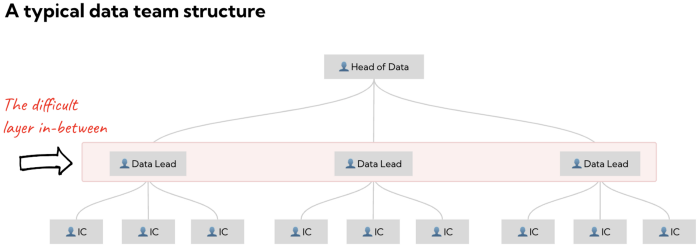
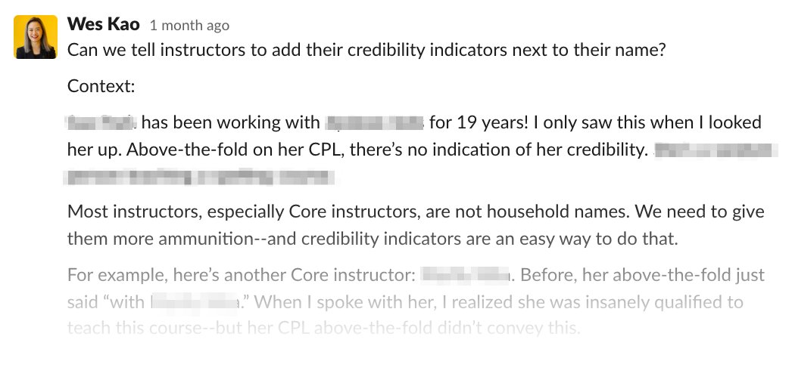

27 On the job
27.1 Misc
- Resource
- Develop a business acumen and keep up to date on industry advances pertaining to your company by subscribing to newsletters, blogs, podcasts, and YouTube channels by industry leaders and enthusiasts.
- Maintain a “Brag Document” (article)
- Lists accomplishments, projects, etc.
- You or your manager isn’t likely to remember what you did over the past year
- Important from performance reviews
- Useful when your manager goes to bad for you (e.g. get a raise)
- Pull Request Descriptions
- Document your additions, removals, and changes to the code.
- Git does this, so I’m not sure exactly what this means
- Summarize what problem you’re solving with this pull request, and how you solved it.
- Document your additions, removals, and changes to the code.
- Data Team Structure
- IC (individual contributor)
- Example: Schedule of Senior Data Scientist
8:30–9:00 — Starting My Day
- Go through and respond to emails
- Go through group chats you might have missed
- Check if there were any errors in production runs that you’re responsible for
9:00–10:00 — Pair Programming
- Work on a task with a junior data scientist
- Help each other with coding problems that are blocking each other’s individual tasks
10:00–10:30 — Scrum
- See Project, Development >> Development Frameworks >> Agile
10:30–11:00 — Prep for a Presentation
educational presentations - Executives hear buzzwords and want explanations
results of an initial model to business stakeholders
Read more email if you don’t have a presentation
11:30–12:00 — 1–1 with Manager
- Feedback, discuss career goals
- Get help with problems outside the data team
12:00–1:00 — Get Feedback from Lead Data Scientist
- e.g. for projects you’re working on
1:00–4:30 — Code!
27.2 First Month
- Understand the business
- Get a general understanding of the scope and context of the business that your company operates
- Anticipate the needs of key stakeholders
- Have meetings with departments and get an understanding of how they currently use data
- Get a sense of their internal workflows and how you might be able to improve them (e.g. automation, easing access, etc.)
- Figure out what the company needs and your bosses don’t like doing. Then improve it or automate it.
- Explore ways that you can use data to help the company’s core mission
- Find out which KPIs are used
- Find out how the data is collected
- Get familiar with the data, the used tech stack, and current projects as soon as possible.
- Manager 1-1s
- Set up frequent 1:1 sessions with your manager from once to twice per week.
- Also see Performance Reviews/Self-Assessments >> Regularly check in with management
- Focus on the most important points in your 1:1s and how your boss can help
- Don’t talk about problems only — also achievements
- Clarify expectations early and often
- Find out how your performance score is calculated.
- This score will likely be one of the few things that someone a few more rungs up the food chain will have to determine who gets laid off, so while this score shouldn’t be your only focus, it should be front and center.
- Negotiate timelines for diagnosis and action planning
- Don’t let yourself get caught up immediately in firefighting — get a clear picture first
- Set up frequent 1:1 sessions with your manager from once to twice per week.
- Meet with colleagues (teammates, IT)
- Helps to better understand the challenges they are facing, their expectations of your role, and what is important to them
- Questions
- What is your background?
- What are the current projects you are working on?
- What are the biggest challenges and why?
- What are Data (Science)/tech topics you are interested in?
- What tools/software/frameworks are in use?
- How is our relationship with other departments?
- If you were me, what would you focus on?
- What are your expectations of my role?
- What is important to you in working together?
- Meet with non-technical stakeholders
- Helps to get a better picture of the company’s strategy and political landscape
- Questions
- What’s your background?
- What are the biggest challenges the organization is facing?
- What are your expectations of our team/unit?
27.3 Meetings
- Example
- Scenario from https://towardsdatascience.com/how-did-machine-learning-interpret-problems-and-save-cost-for-ecommerce-companies-6c92796e5ed8
- Meeting where the discussion was about the high amount of total failed delivery (FD) cases, its increment, the potential root cause of each case, the major reasons, its trending.
- FD is when delivery of product is refused at the last moment
- Meeting where the discussion was about the high amount of total failed delivery (FD) cases, its increment, the potential root cause of each case, the major reasons, its trending.
- Two groups of people in the room
- The Questioning group: CEO, CFO, Marketing Team, they asked tons of questions. Most of the questions began with “What” and “Why”, some others were “How to” and “What if”.
- The Answering group: CDO, CCO, BI Team, they gave answers for roughly 30% of asked questions, most of them answered for the group of “What” and “Why” questions, while the group of “How to” and “What if” went to the void.
- Inefficient: Hypothesis-Test-Report loop (trial and error approach)
- the Business Team or Financial Team kept asking about the reason why this problem happened. Then they also put you in some specific circumstances such as “what if we do this?” or ”I think this happened because of that”.
- The loop
- They give you a potential cause
- You look at your data, did something you called analysis
- Report findings
- If the data doesn’t support the hypothesis, they give another hypothesis, and the loop repeats
- Recommended: Run a preliminary analysis instead
- The business-side won’t wait too long to get the decision from the Data Team, they just need something that sounds reasonable enough to make a decision. So, there’s a time constraint.
- Run a decision tree or other quick running algorithm on a sample of the data (if the data is “big”)
- Look at the top 1 or 2 levels of decision rules (decision tree) or feature importance (rf) or characteristics of the clusters(k-means, etc.) for a latent variable
- Interpret and report results
- The business-side can further develop a list of hypotheses (and test) from results
- Solutions:
- 3 decision rules were found to be informative and actionabel
- Customers that have had 12 successful deliveries tended to continue to have successful deliveries
- Customers who paid with a credit card tended to have successful deliveries
- Customers who paid with a credit card and ordered over a certain $ amount tended to have successful deliveries
- For the “Number of orders in the past” problem, we can collaborate with the Customer Service Team to give more support to new users, keep tracking their orders and have proper action like picking up the phone and confirming their orders when they placed any high value order. Or we can give them more instructions on how to place orders, how to contact us when they need help, and how to cancel any order when they lose their interest.
- For the “Payment method” problem, we had a campaign in which we reserved VND30,000 (equivalent to USD1.2) and split it into 3 vouchers (VND10,000 for each). When they placed the order and chose Cost on Delivery method, we offered them a voucher (VND10,000) to reduce shipping fee if they agreed to change to another prepaid method. Of course, we offered to “remember my payment method” for them to use it later (actually that’s the way we drive them to use that method again in future), and keep doing it 3 times. Most of the cases, we succeeded in keeping them using the prepaid method after the 3rd order, and they keep using it forever after. After that, in the second campaign, we applied the first 3 free shipping fees to get more effectiveness.
- For the “Cost of booking” problem, we used the same method with the “Number of orders in the past” problem, letting the Call Center keep interacting with Buyers who have high-value purchasing.
- 3 decision rules were found to be informative and actionabel
- Scenario from https://towardsdatascience.com/how-did-machine-learning-interpret-problems-and-save-cost-for-ecommerce-companies-6c92796e5ed8
27.4 Performance Reviews/Self-Assessments
- Misc
- Typically occur in February
- Track achievements throughout the year
- If you aren’t disciplined about keeping track of your achievements, you’ll be forced to comb through multiple records, including Jira tickets, pull requests, emails, and design documents, to compile your self-assessment at the last minute.
- See Get your work recognized: write a brag document for a template
- Keep the stories short and sweet when turning your work log into a self-appraisal.
- If you are reviewing your self-evaluation and feel the need for a “TL;DR” summary at the top, it indicates that it is too lengthy — you may need to consider using bullet points instead of writing an essay.
- Identify which accomplishments truly stand out — these could be instances where you went above and beyond in your day-to-day job (e.g. worked at the weekend to get a feature over the line; evaluated multiple options before implementation, etc.).
- Backup contributions with measurable metrics
- Focus on specific accomplishments X, measurable metrics Y, and the methods used to achieve results Z (Google X-Y-Z formula for resume writing)
- Developers can highlight their achievements, quantify their impact, and support their contributions with concrete data.
- Metrics like lines of code, bug fixes, or SLAs are typical to demonstrate the effectiveness of their work.
- **See Metrics section for more examples
- Example: a full stack developer
- Reduced the overall page load time by 80% (X), as proven by benchmark testing (Y), by implementing a caching pattern and simplifying the HTML DOM (Z).
- To make your accomplishments stand out, try to use descriptive adjectives and relevant keywords that emphasise their importance
- Example: instead of saying: “delivered the ABC feature”, you can add: “despite the increased scope on the ABC feature, the deployment went out on the committed sprint goals and timelines”
- Focus on specific accomplishments X, measurable metrics Y, and the methods used to achieve results Z (Google X-Y-Z formula for resume writing)
- Regularly check in with management
- Scheduling meetings specifically to discuss personal performance-related topics since most meetings will be dominated by the current pressing matter.
- Seek feedback on progress towards objectives, and identify areas for improvement, as this will avoid any surprises during the year-end reviews.
- Questions
- How am I doing in relation to my goals and expectations so far?
- Is there any additional support or resources that I can access to help me be more effective in my role?
- Are there any opportunities for me to take on new challenges or responsibilities within the team or organisation?
- Connect your actions with what your manager needs to be successful.
- Do they write progress reports to senior leadership? — provide them with metrics and extra info.
- Do they negotiate timelines/budgets in case of scope creep? — give them enough notice so they can keep the project on track.
- Consider the non-technical competencies
- Demonstrating a well-rounded set of competencies, can position yourself for a leadership role
- Examples: communication, teamwork, critical thinking, proactiveness, adaptability, or leadership.
- Be sure to link the deployment of those attributes directly to the results you have achieved.
- Include feedback you have received from people beyond your direct manager.
- e.g. extracts from emails you have received from internal/external customers or kudos from your peers.
- Include feedback you have received from people beyond your direct manager.
- Acknowledge the shortcomings
- Management wants to see is how they were overcome, or how one pivoted in response to them, or otherwise what the lessons learnt going forward were.
- Example: “I only achieved part of this goal because of {very clear reason}, and I am now working on {this new method} to overcome this”.
- Do not be afraid to seek advice or ask for additional training when needed.
- Metrics
- Coding
- Number of PRs
- Number of code reviews
- Number of technical documents
- Number of tech debt tickets addressed
- Impact of refactoring on performance/code quality etc
- Test coverage increase by X%
- Number of reusable frameworks/libraries created
- Number of successful releases (i.e. lack of emergency releases after a release)
- Reliability
- SLAs increased by X%
- TTD/TTM/TTR average times
- Productivity
- Tools created to automate a repetitive task to reduce time by X%
- Number of tickets completed ahead of time
- Number of overtime hours worked
- Cost saving
- Saved $$ by using open source instead of paid library
- Saved $$ by using cloud services
- Saved $$ by implementing DevOps pipelines
- People
- Number of people onboarded
- Number of people interviewed
- Number of people mentored
- Impact on the above in the team setting (e.g. faster delivery capability)
- Learning
- Number of completed courses
- Number of new tech stacks introduced as a result of keeping up with tech
- Other glue work
- Number of KT sessions organised
- Number of stakeholder meetings organised
- Number of process improvements implemented
- Acting as a liaison between cross-functional teams to facilitate communication and understanding
- Impact of proactivity to solving problems
- Design discussions that you have been part of
- Coding
27.5 Keeping Stakeholders in the Loop
- Remind them where you left off
- Assume they’re reading with partial attention. Remind them where you left off so they can task switch faster
- Example
- Bad: “Here’s the updated link.”
- Good: “Here’s the updated pitch. I incorporated your feedback & included a change summary below. Let me know if you have any questions. I’ll plan on shipping tomorrow morning.”
- Be specific & explicit about what you need.
- Don’t assume your boss knows what you need from them.
- Be specific about what you need and what the next step is.
- Example
- Bad: “The new ad is updated in the Google Doc. It’s published in FB, but not running.”
- Good: “Please approve the new ad copy (screenshot below). Once you approve, I’ll publish and go live on FB.”
- Mention if it’s an FYI.
- Don’t make people guess if they need to take action.
- Example:
- Bad: [no context]
- Good: “FYI. Sharing because you mentioned wanting to see examples of investor updates.”
- Adopt an action-oriented posture
- If you’re stuck, don’t just stay stuck. Speak up to get what you need to do your job.
- Example
- Bad: “I didn’t do it because I don’t have the right permissions in Google Analytics.”
- Good: “Can you add to me to Google Analytics with x permissions? I need it in order to do y.”
- Mention your criteria and assumptions.
- Most bosses want to know that you did your due diligence and are thinking ahead
- Example
- Bad: “I recommend this platform.”
- Good: “I recommend this platform because of x, y, z criteria. My assumptions were a and b. The potential trade-off is x, but seems manageable because y. I vetted options, including [insert options] but [my recommendation] better fits our needs.”
- Put the recommendation at the top, then context below.
- Leading with a recommendation allows your recipient to read as much or as little of the context as they need.
- Example:
- Bad: [Actions, backstory, and context all jumbled together]
- Good: 
- You can share LESS context when…
- You’ve made this type of decision many times & you have task relevant maturity
- Decision is reversible and inexpensive
- This is top of mind for your boss (not one of 25 projects they’re managing)
- Aim for MORE context when the decision is…
- Irreversible and expensive
- Customer-facing
- You’re making this type of decision for the first time
27.6 Requests
- Misc
- Also see Job, Organizational and Team Development >> Starting a Data Science Department >> Create an environment >> Limit ad-hoc requests
- Ad-Hoc Requests Queue
- Limited to something an individual data practitioner can handle in no more than 1–2 weeks.
- Sometimes appropriate to develop a prototype as part of an ad-hoc request, and if the stakeholder is happy with the results it de-risks a larger effort to put something into production
- Project-Level Work
- Needs cross-functional support from multiple teams (say, putting some model into production) and requires more formal planning.
- Triage process
- Since the queue is for unplanned work and balanced against all the other incoming requests (plus ongoing, committed project priorities), avoid using it for extremely urgent requests
- A small core team reviews new requests and pending status about once weekly, and a typical request can take anywhere from 1–2 weeks to complete once it’s been reviewed and resourced.
- Anything more urgent is left to teams with dedicated on-call staff or more appropriate processes.
- Make results discoverable for other stakeholders and not just internally for the data team
- When possible, migrate results to a user-friendly, searchable platform to increase discoverability and provide a better-defined surface for those one-off work products “in production.”
- Batch and Time-box
- Batch: group some similar tasks (or in this case, ad-hoc requests) to be completed at once, reducing the time and effort on context-switching (i.e analyzing different tables) or moving between tools.
- Time-Box: preplan your schedule, allocate a fixed period to do projects, and only do ad-hoc requests if it’s an emergency (p0)
- Types
- The GPS: “I need this info, but I’m asking you because I do not know where to start looking.”
- Usually are relatively simple requests that require just applying a filter on the right place or transforming a table into a chart
- Solution (if it’s a Iikely recurrent request)
- Set up a time to show them how to do it themselves
- Show them step-by-step where the data is, how to filter it, and convert into a format they’re comfortable using (e.g. Excel pivot table)
- Email them the steps
- When they come back with the same request, open the email, and follow the steps to show with them that following the email solves their need
- When they come back yet again with the same request, forward them the email or refer to the email
- The Personal Assistant: “I need this info and I could get it myself, but I cannot / don’t want to use my time.”
- If a peer asking
- Help them as long as it doesn’t mean that by doing so you are not postponing tasks and requests that are within your job description and that may affect the way your work is perceived.
- If it is a senior stakeholder in a meeting wanting a quick answer
- If it’s something that’s not readily available (e.g. screenshot off a dashboard), give an estimation and emphasize that its an estimate
- Make sure to specify the source of the data and filters or conditions applied. This is important in case someone challenges or wants to validate it and will also help us in case it comes up in a conversation after the meeting.
- If this happens often, ask the stakeholder to inform you in advance of when this type of meetings are going to happen, so you can be prepared.
- If a peer asking
- The Gatherer: “This information is scattered across multiple sources or not properly structured for the need. I need you to do it.”
- Common request when the reporting tools are not properly fitted to the user’s needs
- If the tool is from outside the company:
- Ask reason for the request and what are they going to do with the answer. That will define the scale of what you need to build.
- If the same request happens frequently, then you should contact the relevant team to make sure that the business has all the tools they need for their day to day operations.
- If the tool is from inside the company:
- Ask if it is a one-of request or if it is a signal of a business need not covered by the reporting tool. And if so, add an update of it to your to-do list.
- Example: email format of a response to such a request
- An excel with the requested data / report
- A copy-paste of the requested table / chart so they can see it on the email
- A couple of call outs from the data just to highlight what I’ve identified (no idea what a call-out is)
- A “Process” section at the bottom of the email explaining the sources, filters, queries…
- Helpful in case you need to reproduce the report in the future
- The HAL: “I need you to run a diagnostic analysis to check why this is happening / I need to know what we need to do to fix this / …”
- Type of question you want. Request refers to a business need.
- Steps
- Identify the “why” of the request. Sometimes the question is crystal clear. Others it can be veiled or masked.
- Response should answer 3 questions: “What, So What, Now What”
- What: make sure the type of viz or table is clear in communicating the answer
- So What: annotate the chart and include a description of all key insights
- Now What: State your recommendations
- Always deliver by email and include a tweet-like analysis summary. Even if you present it in a meeting or by sending a link (or a file) via chat, always send an email with the analysis conclusions and a brief headline of the outcome.\
- Include a methodology slide or part in your answer. As with previous requests, on many occasions your answer will be challenged (someone will want to understand how you got to this conclusion), or you (or someone else) will have to repeat the exercise in the future. Including a methodology (even if it is very high level) will help in repeating it. And since it is included on the email where it is sent, it will be referred to, together with the results.
- The Workaround: “I can request it to someone else, but it will take longer and/or generate a less comprehensive / insightful output than yours. So I’m asking you.”
- On many occasions, it will involve more office politics than actual analyst work
- It can be requested to you either because the stakeholder does not know that this is not your main job or because the stakeholder trusts you more than the (tool, task, project) owner.
- ** Always make sure that the stakeholder is aware that it should be done by X (team or person). **
- When it is by lack of knowledge of the task owner, try to mediate between them and the requester.
- When it is because of trust, then I just state the point (when delivering the answer) to make clear that this is someone else’s job.
- If these requests become frequent
- Contact the tool owner and explain that there is a mismatch between the business and the tools offered, as with the “Gatherer” requests.
- Then present what you have been delivering as a proof-of-concept to evaluate and implement in the solution.
- The GPS: “I need this info, but I’m asking you because I do not know where to start looking.”
- Handling Ad-Hoc Requests
- Intake Forms
- Misc
- Me: this list of inquiries is great, but it will take time for the requester to think through and give answers for this stuff. Some people just want an answer to their question and not to have to go through this type of interrogation. So maybe there can be a request form that covers this stuff. That way they know what’s expected upon making a request. Then, any further clarification can be handled through email or a quick phone call when the requester has the time.
- Examples
- How to Effectively Ask for Statistics Help
- This seems more geared towards academics or people with some understanding of programming and statistics.
- Also available at R >> Documents >> Job
- An Intake Form for Data Requests
- Business oriented
- Links to a google form that’s a kind of choose-your-own-adventure type of intake form. The follow-up questions are determined the person’s answers on the first page of the form.
- Also available at R >> Documents >> Job
- How to Effectively Ask for Statistics Help
- Don’t ask for metrics
- Since most business requestors don’t have an intimate understanding of all the assets in our analytics platform, the answers were often confusing (what logs are they referring to?) or impossible (we just don’t capture that type of data).
- Don’t let the stakeholder to just request a solution
- By making sure that you understand the problem, you confirm that there is indeed a problem and you guarantee that your stakeholder has defined the business case.
- Make sure that you fully understand the request and that the requester fully understands what they really want.
- Ask them how they will use the output, or what decision will be made with the answer
- Helps to further contextualize the requests, and get at the heart of “why” someone is asking for help and the root of a stakeholder’s need
- Provides pivotal information for prioritization. Can infer the urgency and relative priority of a request from how the information is going to be used
- Don’t ask for a deadline
- Deadlines can result in a lot of things due yesterday and mismanaged expectations
- Stakeholders tend to pick what they think is “reasonable,” but without any of the context to make that call (like other priorities in the queue, ongoing projects, complexities of the data, etc.) the timeline is arbitrary.
- Follow-up with the requester with your proposed delivery date after triage of new requests is completed. This allows your teams to manage expectations without wrecking sprints with constantly shifting priorities
- Ask them what happens if they don’t get the answer (on time)
- Me: I’m not sure about this one. Maybe require some tact. Perhaps word it differently. The requester may think they’ll never get an answer if they say anything but a catastrophe will happen if they don’t get their solution on time.
- Similar to asking what is going to be done with the output, this helps to contextualize the need and drive prioritization. This is an even stronger tool for triaging and prioritizing requests. If someone can’t be bothered to justify what will happen without the analysis, they probably don’t need it right now.
- Misc
- Investigate and determine if any existing solutions may help to answer the questions that are being raised
- You’ll likely have to maintain a solution indefinitely, so make sure a solution doesn’t already exist before building something new.
- When appropriate, go the extra mile to provide more than the initial ask and with minimalism/interpretability in mind
- Catalog all analysis results internally
- So you can re-share, recycle, or refresh results as needed.
- If the stakeholder has follow-up questions at a later date, whoever is picking up the request has an existing body of work to carry forward or a point-of-contact with domain expertise who worked with similar data assets.
- Collect feedback for each individual request
- Gives stakeholders a chance to comment on the work products and create more opportunities for process improvement
- Helps you understand the real impact of work products that make it into “production”
- Intake Forms
- Project-Level
- Depending on the complexity, these requests may or may not be appropriate for the ad-hoc requests queue (gray area type projects)
- Most of the Ad-Hoc stuff above + this stuff
- Make sure that you know the proposed solution well enough to be able to explain the requirements thoroughly before reaching out to the data engineers.
- Give a sketch of the solution to the stakeholder for them to sign off on.
- It should explain what the end product will look like and how it will be used
- If this “sign-off” involves multiple people who are perhaps difficult to reach or this process of confirmation is just dragging along, strongly consider starting work on the engagement while waiting for this feedback.
- Examples
- Dashboard: Make a quick sketch of the various stats, KPIs, filters, graphs, etc. with a general layout.
- Analysis: Make a rough outline of the required data, the possible user inputs, as well as the various outputs (eg. charts, tables) and their formats (eg. PNG, HTML, CSV).
- Document progress on the project
- Ensures that timelines are clearly communicated, negotiated, and agreed upon by the various groups involved in the project’s delivery.
- Helps to hold all teams accountable for timelines as well as allot resources to ensure that your organization is distributing resources efficiently.
- Engage stackeholders
- Inform them of the engagement’s progress, and ideally show them a draft of the solution as a work in progress.
- Allows for additional feedback and potential pivots that are better surfaced partway through the project than upon its delivery.
- Create documentation for the final deliverable
- Features
- Helps users navigate your solution
- Include details on the data (eg. where it comes from, how it’s transformed, etc.)
- Features
- Work with the users of your solution
- Help them understand how it works, inform them of any nuances they need to be aware of, and invite any questions or concerns they may have about it
- Follow up at a later date
- See how their use of the tools are going, what pain points they’re experiencing, potential areas for improvement, etc. and then work to fix any issues
- Iterate upon deliverables to achieve continuous improvement and growth of insights
27.7 Small Company
- Produce something quick initially (establishes respect for your expertise)
- Get a list of the most pressing problems that the executives wanted me to solve.
- Find a relatively small but high-impact problem.
- Nail it and make sure that it is recognized as solving a high-priority problem.
- Small companies have limited budgets, so demonstrating frugality and resourcefulness in your early projects may assist you in obtaining more resources in the future
- Develop a strong relationship with those who are interested in analytics first. They will be invaluable as your advocates to excutive stakeholders and other more skeptical colleagues.
- Develop a strong relationship with IT so you get some of the technical obstacles removed quickly.
- Opening ports, getting permissions
- Remote access to one of their servers so you can run resource-intensive analytics processes